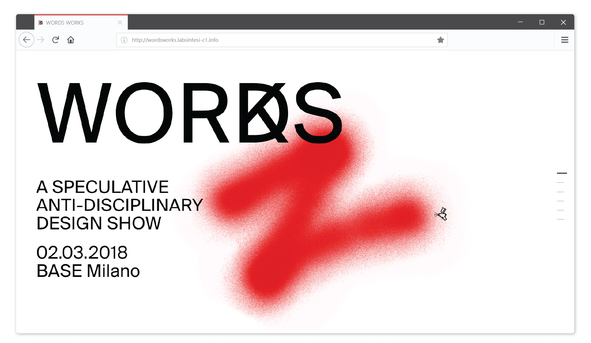
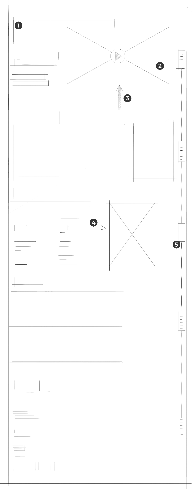

TEAM MEMBERS
Nicolò Azzolin
Margherita Motta
ROLE
web design, interaction development
EVENT
Final Synthesis Studio Exhibition at BASE Milano, 2018
Words Works
A speculative anti-disciplinary website
QUICK NAVIGATION
Website realized for the Final Synthesis Studio Exhibition in BASE Milano. Using the left mouse click on an empty space will let the user freely paint the background of the page. This feature is a digital translation of the corporate image of the exhibition, which is based on the airbrush paint effect. The website initially served as a teaser. Then has been expanded with photos and a video reportage of the event.
Interaction
Try it here below
not available on mobile, use desktop version
Wireframe

- Texts “above the fold” only contain essential informations which will then be expanded on the second portion of the page.
- At the first mouse scroll the screen will stay still, while the reportage video will slide from the bottom, overlapping the other elements of the page.
- Left clicking on the webiste empty areas will allow the user to paint the background with spray paint, whose trail will fade after a couple of seconds.
- In the third section there’s a list of the words used as a starting point for each group and the corresponding project name. Moving the mouse on each text line will show a photo preview of the project on the right.
- The navigation bar on the right grants a quick access to every section of the site.